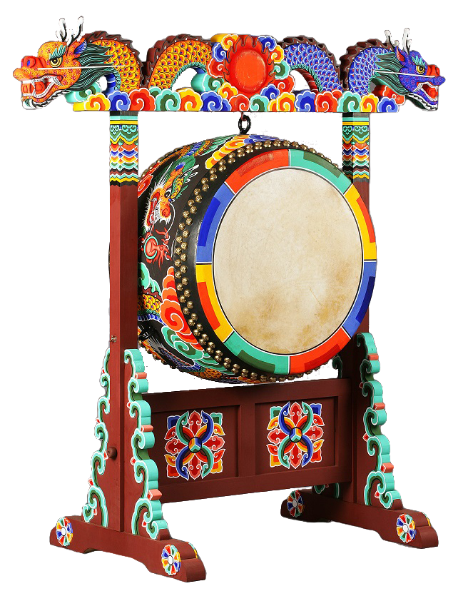

악기장
전통음악에 쓰이는 악기를 만드는 기능

제작과정
가야금 제작과정은 1) 앞, 뒷판 건조현황, 2) 앞판 절단 및 모양내기, 3) 앞판 대패작업(겉과 속), 4) 쫄대 및 속감 접착 작업, 5) 뒷판 해, 구름, 달 오려내기, 6) 공명통 형성 작업 (앞 뒷판 아교로 접착), 7) 인두작업, 8) 좌단 장식 (머리 싸기), 9) 뒷판 사포 작업 및 발감 부착, 10) 칠 작업, 11) 안족 모양내기, 12) 안족 깎기, 13) 명주실 작업, 14) 조율 작업 순으로 이루어진다.
사용재료
현악기는 울림통을 오동나무로 하고 밑판을 밤나무와 소나무 등으로 제작 하는 것이 일반적이며, 장식품의 조각은 대추나무나 흑단, 향나무 등을 많이 이용한다.
특징
고구려의 벽화 등을 통해 악기를 만드는 장인은 이미 삼국시대부터 있었을 것으로 짐작되며, 조선시대에는 궁중에 악기조성청이라는 독립된 기관을 설치하여 국가에서 필요한 악기를 제작하여 사용하였다. 현재 우리나라 국악기는 약 60∼70종으로 가야금과 거문고가 가장 대표적이다.
전승자
| 보유구분 | 이름 | 성별 | 기예능 | 지역 | 인정일 |
|---|---|---|---|---|---|
| 보유자 | 고흥곤(高興坤) | 남 | 현악기 제작 | 서울 | 1997-03-24 |
| 보유자 | 김현곤(金賢坤) | 남 | 편종,편경 | 서울 | 2012-07-23 |
| 보유자 | 이정기(李廷耆) | 남 | 북 제작 | 서울 | 2012-11-20 |
| 보유자 | 윤종국(尹鍾國) | 남 | 북 제작 | 경기 | 2022-10-1 |
| 보유자 | 임선빈(任善彬) | 남 | 북 제작 | 경기 | 2022-10-11 |
| 전승교육사 | 이동윤(李東允) | 남 | 현악기제작 | 서울 | 1995-08-01 |
| 전승교육사 | 윤신(尹信) | 남 | 북제작 | 경기 | 1997-08-01 |
| 전승교육사 | 김영렬(金寧烈) | 남 | 현악기제작 | 경기 | 2004-03-20 |
소재지
서울